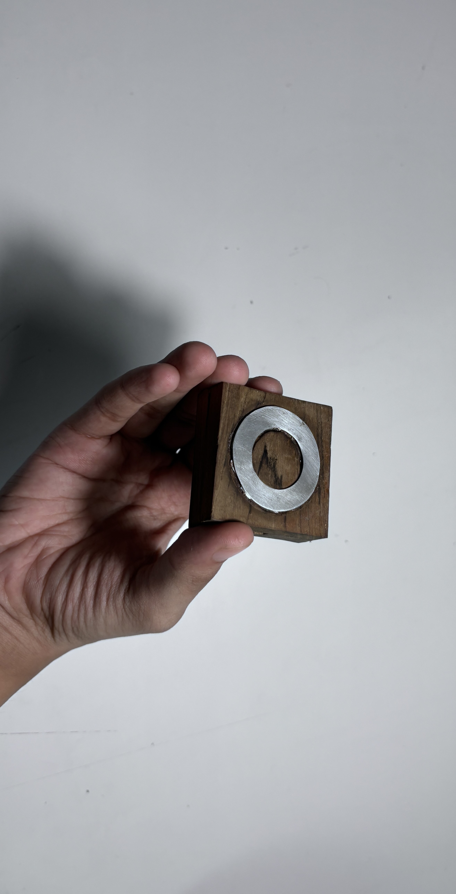

HoverBox
Studio Poetics, 2024.
Read More
In short,
The HoverBox is an early prototype of a handheld capacitive dial. It follows a design pattern traditionally used in the iPod. The body of the HoverBox is made with wood and the dial is etched with tiny copper plates for detecting capacitive change. The dial is slightly protruded from the surface of the body itself. Different users of computers have developed comfort in different input methods based on their nature of work. However, numeric input and linear progress within any software have been limited to continued button presses, directional input, and knobs. We chose to address this specific use-case combined with limited degrees of ‘newness’ offered by the choice of a natural material like wood.
Why HoverBox?
While working on an open-ended inquiry at Studio Poetics, we identified the role played by desk objects in 'gaps' throughout the day. We tried observing what people do when they take a short break from a task while on their desk. We then set out to imagine desk objects that could layer a workspace with 'life of their own'.
Prototype V1.
Prototype V2.
